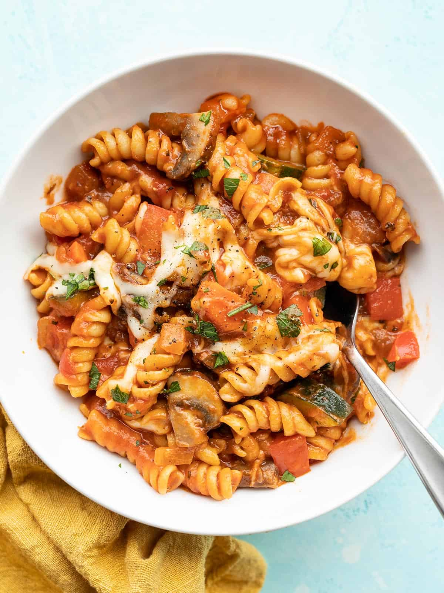

One Pot Veggie Pasta

One Pot Veggie Pasta
Here’s a quick little one pot pasta, you can literally add in whatever you have on hand and it creates a tasty one pot meal with tons of color, flavor, and texture.
As far as one pot pasta goes, this recipe isn’t that revolutionary, but I love it for one main reason—it’s perfect for using up leftovers.
This one pot veggie pasta is an easy, satisfying, and quick dinner.
Use whatever vegetables you have on hand and make it your own!
Ingredients
- 2 cloves garlic
- 1 yellow onion
- 2 carrots
- 2 tablespoons olive olive
- 8 oz. mushrooms
- 1 zucchini
- 1 red bell pepper
- 1/2 lb rotini
- 1/2 teaspoon dried basil
- 1/2 teaspoon dried oregano
- 2 cupes vegetable broth
- 24 oz. pasta sauce
- 4 oz. mozzarella
Steps
- Mince the garlic, dice the onion, and slice the carrots. Add the garlic, onion, and carrots to a large pot with the olive oil. Sauté over medium heat until the onions are soft and translucent
- While the vegetables are sautéing, slice the mushrooms. Once sliced, add them to the pot with the other vegetables and continue sautéing
- While the rest of the vegetables are sautéing, dice the zucchini and bell pepper
- Once the bell pepper and zucchini are diced, add them to the pot along with the rotini, basil, oregano, and vegetable broth. Stir to combine. It's okay if the broth doesn't fully submerge the pasta
- Place a lid on the pot, turn the heat up to medium-high, and allow the broth to come up to a boil
- Once the broth reaches a full boil, give the pasta a quick stir, replace the lid, then turn the heat down to medium-low. Let the pasta simmer over medium-low, stirring occasionally and always replacing the lid, for about 10 minutes, or until the pasta is tender
- Once the pasta is tender, add the pasta sauce to the pot and stir to combine. Top with the shredded cheese then place the lid back on the pot. Let the pasta heat for a few minutes, or just until the cheese is melted. Serve hot!